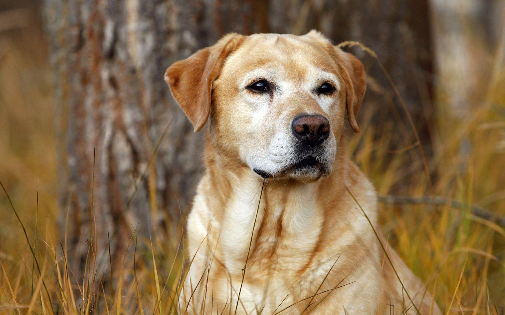

Początki labradora są nieco kontrowersyjne[5].
Początkowo wyhodowana do udziału w polowaniach, rasa ta stała się popularną rasą psów rodzinnych. Rasa pochodzi z Wielkiej Brytanii (Szkocja), została wyhodowana pod koniec XIX wieku.
Goldeny prawdopodobnie zostały wyhodowane przez lorda Dudleya Mjoribanksa. W 1858 roku lord miał obejrzeć przedstawienie rosyjskiej grupy cyrkowej, którego główną atrakcją były pokazy kilku owczarków o żółtawej maści.
Urzeczony ich umiejętnościami lord odkupił je i przywiózł do swojej posiadłości i to one miały być przodkami goldenów. Chociaż historię tę często przytacza się, gdy mowa jest o początkach rasy,
większość kynologów uważa ją za mało prawdopodobną. Owczarki charakteryzują się zupełnie innymi cechami niż psy myśliwskie.
Związek z tą opowieścią ma jedynie to, że pierwsze goldeny pojawiły się na wystawie pod nazwą rosyjskich retrieverów.
Inne źródła podają, że rasę tę wyodrębnił w XIX wieku lord Tweedmouth[6].
Istnieje także teoria, według której skrzyżowano żółtego retrievera gładkowłosego o imieniu Nous z suką tweed water spaniela i otrzymano cztery, żółte szczenięta.
Następnie w celu uszlachetnienia rasy skojarzono je z czarnymi wavy coated retrieverami (obecnie znanymi jako flat coated retrievery), seterami irlandzkimi i prawdopodobnie z bloodhoundami.
Nowa rasa tak przypadła do gustu angielskim hodowcom, że postanowili ją rozpowszechnić.